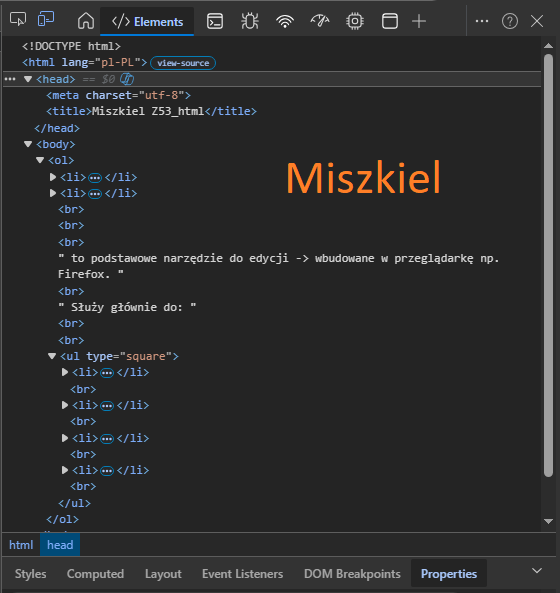
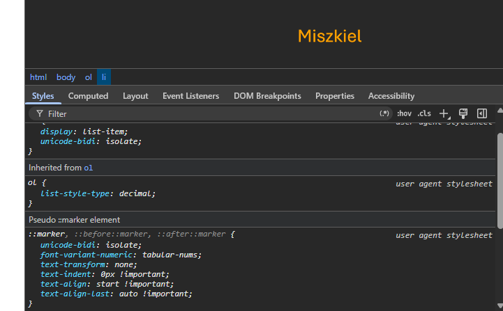

Kod HTML
<!DOCTYPE html> <html lang="pl-PL"> <html> <head> <meta charset="utf-8"> <title>Miszkiel Z53_html</title> </head> <body> <ol> <li> Do czego służy Pasek dewelopera, kiedy jest gotowy do użycia, wymień zakładki Paska developera. <br><br> <u><b>Jest do dyspozycji użytkownika po zainstalowaniu przeglądarki.</b></u> <br> ->To cały zestaw narzędzi, który zawiera wiele zakładek, m.in.: <br><br> <ul type="square"> <li>Elements / Inspector ← (to ten Inspektor opis patrz poniżej)</li><br> <li>Console (błędy i logi JavaScript)</li> <br> <li>Network (ruch sieciowy)</li> <br> <li>Sources (debugowanie kodu)</li> <br> <li>Application / Storage (cookies, localStorage itd.)></li><br> <br><br><br> </ul> <li> Do czego służy Inspektor Elements, w jakiej zakładce się znajduje, do czego służy? </li> <br><br><br> to podstawowe narzędzie do edycji -> wbudowane w przeglądarkę np. Firefox. <br> Służy głównie do: <br><br> <ul type="square"> <li>podglądu struktury HTML strony </li><br> <li>edycji HTML i CSS „na żywo” </li><br> <li>sprawdzania stylów (kolory, marginesy, fonty) </li><br> <li>zaznaczania elementów na stronie </li><br> </ul> <p></p> <br><br> <br><br> <br><br> <br><br> <br><br> <br><br> <br><br> <br><br> <br><br> <br><br> <p></p> </body> </html> <!-- Miszkiel Z53_html -->